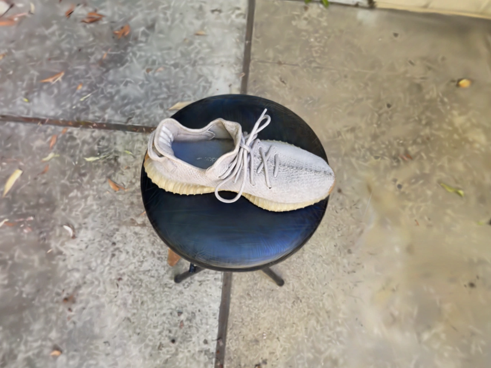
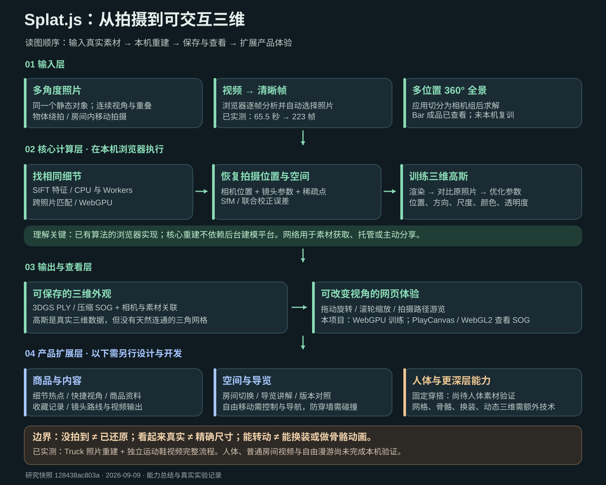

输入是什么？
多角度照片，或绕着物体／在空间内移动拍摄的视频。视频会先自动选择清晰帧，再按照片重建。目标与环境尽量保持不变。
SPLAT.JS / 能力、证据与产品方向
照片或视频，在本机浏览器中重建。
让观看者自己转动视角，走近细节。
总结版 · 2026-09-09 · 已完成真实视频重建验证

01 / 先说清楚输入和输出
多角度照片，或绕着物体／在空间内移动拍摄的视频。视频会先自动选择清晰帧，再按照片重建。目标与环境尽量保持不变。
用大量带颜色、尺度与透明度的三维高斯描述外观。库导出 PLY；应用可压缩为 SOG，配合相机信息重新打开、旋转、缩放和游览。
它有真实三维位置，但没有天然连通的三角表面，也不自动具备骨骼、碰撞或准确尺寸。PLY 后缀本身不能证明它是网格。
要做可编辑模型，还需表面重建与模型整理；要做动作或换装，还需人体和服装技术。当前演示的目标是可改变观察角度的视觉展示。

视频解码和选帧在浏览器完成；CPU 与 Web Workers 提取 SIFT 特征，GPU 匹配；JavaScript 求解相机位置、镜头参数、稀疏点并联合校正；WebGPU 反复渲染、对比照片、优化高斯。当前成品 SOG 由原应用内置的 PlayCanvas / WebGL2 查看。
作者实现的是已有计算机视觉和 3DGS 方法，核心不依赖后台建模平台。外部素材下载、模型托管和主动分享是另外的环节。当前训练针对这一场景，不是训练通用大模型。
03 / 原项目样例 + 我们的独立视频实测
绿色标签是本机验证；蓝色标签是上游已有能力或成品。独立视频是我们选用的公开素材，并非我们拍摄。
加载后可拖动视角、滚轮缩放。
成品查看：左键拖动旋转、滚轮缩放；▶ 沿拍摄路径游览。页面按需加载模型。
重新训练：进入输入卡片后点击 Start training。切换样例会关闭当前运行器，请先保存需要保留的结果。
当前共享查看器的操作方式以物体环绕为主；房间内自由行走、碰撞和导航并未在本页实现。
打开原有鞋子视频 / 模型对照页 ↗04 / 哪些已经验证？
| 样例 | 来源与生成者 | 本项目证据 | 范围 |
|---|---|---|---|
| 官方 Truck | 251 张照片；作者训练，约 105 万高斯 | 成品加载与游览 | 不是我们本次训练 |
| 官方 Bar | 102 张 360° 全景；作者训练，约 400 万高斯 | 成品加载、视角操作 | 没有本机复训 |
| Truck 本机复训 | 100 张上游照片；本机计算 | 100/100 定位；10,035 次；PLY 19.6 MB | 480 px 草稿，35 万训练高斯 |
| 独立鞋子视频 | 65.5 秒原 MP4；本机选帧和重建 | 223/223 定位；10,015 次；SOG 3.8 MB | 已验证重载、拖动与缩放 |
鞋子结果训练时为 350,000 个高斯，文件实际保留 311,757 个；导出会过滤几乎不可见的高斯。训练分数 28.68 dB，没有留出测试集。不能用它与作者测试集分数比较。
RTX 4070 Laptop GPU。本次视频输入到训练完成约 27 分钟，包含人工启动和观察间隔；纯外观训练约 1 分钟。单次记录不代表其他素材或设备的表现。
05 / 原项目的输入与视频资料
固定版本提供照片、全景数据和可查看模型，没有附带这两组原始 MP4。上方可看输入图、照片条和作者成品，不把它们写成视频实测。
Splat.js 固定版本说明 ↗下面是 Bar 原数据项目公开的漫游演示，用来理解室内体验。它使用 360Roam 方法，不是 Splat.js 的训练录像，也不是我们的结果。
06 / 房间如何实现效果查看
覆盖家具、墙角、门口和连接区域，保持重叠。只站在中间原地转一圈，通常不足以可靠恢复深度。
求出多个拍摄位置，再训练外观。白墙、镜子和玻璃要重点检查，没拍到的背后可能有空洞。
固定位置环顾、沿路线导览，或增加自由移动。多个房间可先用导航点切换，再验证连续空间连接。
改变朝向。普通全景也能做到，不能仅凭“看四周”判断已经重建出三维。
沿拍摄位置游览。当前原应用支持拍摄路径；定制讲解和路线编辑属于扩展。
需要室内移动控制、可走范围与导航。高斯没有天然碰撞结构，防穿墙要额外开发。
Bar 是上游成品查看证据。本项目尚未完成“普通房间视频 → 自由行走”的全流程测试，也未验证连续多房间重建。
查看官方 Bar 室内效果 ↑人体边界 / 人体也可以，但要拍对
可以探索“某个人穿某套衣服”的固定外观展示。换姿势、换衣服、骨骼动画需要额外的人体与服装技术，不是该库的现成能力。
本区是基于静态多视图原理的适用性判断，尚未进行人体素材实测。
07 / 从三维展示扩展到产品
以下是可扩展方向，尚未实现对应产品功能。点击场景，看它需要增加什么。
热点标注、快捷视角、讲解卡片、商品链接、视角收藏、路线编辑与版本对照。
素材质检、补拍提示、任务队列、资产管理、设备适配、房间导航与碰撞。SOG 压缩已经存在并已使用。
表面网格、精确尺度、骨骼蒙皮、服装分层、自动换装和动态三维，需另一层技术与验证。
08 / 对我们的意义与审阅重点
商品方向：复用已验证鞋子，在下一阶段加入热点、快捷视角与讲解，检查用户能否找到想看的细节。
空间方向：先补一段普通房间视频的真实重建，再决定导览、房间切换和自由移动的范围。
当前更确定的价值是“采集真实外观 → 保存三维资产 → 网页交互展示”。不能据此承诺任意视频成功、精确测量或自动换装。
本轮能力整理与真实样例已完成。商品交互和空间导览是后续可选方向，尚未作为产品实现。
补充 / 看懂它怎样工作
切换阶段，拖动视角。
这是程序生成的概念示意，不是重建实测。
{kind=link}
{kind=link}